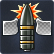
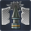

War Thunder je akční válečná free-to-play hra. Ve hře dostanete možnost ovládat letouny, tanky, lodě a helikoptéry z doby od druhé světové války až po současnost spolu s ostatními hráči z celého světa.
Jedním z klíčových prvků hry War Thunder je jeho realistický model fyziky a detailní modelování vozidel, což umožňuje hráčům zažít autentické bojové situace. Hráči mohou bojovat ve více režimech, včetně režimu Arcade, Realistic a Simulator, což umožňuje hráčům volbu úrovně realismu, která nejlépe vyhovuje jejich preferencím.
War Thunder je také známý úniky utajovaných dokumentů na jeho fórech. Od roku 2020 tu bylo 10 úniků pro celkem 14 vozidel. Dokonce o tom existuje i hodinové video na YouTube. Více info zde: Leaks
Hra byla vydána 1. listopadu 2012 společností Gaijin Entertainment. Hra se prvně zaměřovala na letadla a později byly přidány tanky i lodě.
Společnost Gaijin Entertainment, která stojí za vývojem War Thunderu, je ruská herní společnost založená v roce 2002. Kromě War Thunderu Gaijin Entertainment vyvinula a publikovala také další úspěšné hry jako například Crossout a Enlisted. Společnost se specializuje na vývoj a vydání online her s důrazem na realistické simulace a multiplayerové zážitky.
TECH TREE


Armour-Piercing - AP je základní pevná ocelová střela, která je zcela závislá na kinetické energii, aby pronikla a způsobila poškození.
Armour-Piercing, Capped - APC Má nosní kužel (nebo čepici), který je připevněn k přední části pevné střely. Pomáhá zabránit roztříštění. Při kontaktu s pancířem se zbortí a deformace způsobí, že se náboj nakloní směrem k pancíři.
Armour-Piercing, Ballistic Capped - APBC Využívají balistickou čepici tak, aby zlepšila aerodynamický výkon a tím i výkon náboje na delší vzdálenosti.
Armour-Piercing, Capped, Ballistic Capped - APCBC Kombinují standardní čepici a balistickou čepici, čímž zlepšují aerodynamický a průrazný výkon náboje. Mají tendenci vykazovat nejlepší všestranné vlastnosti.

Armour-Piercing, High Explosive - APHE Podobné náboje jako AP, ale obsahují komoru vysoce výbušné výplně.
Armour-Piercing, High Explosive, Ballistic Capped - APHEBC Využívají koncepty APBC s přídavkem výbušného plniva.
Armour-Piercing, High Explosive, Capped, Ballistic Capped - APHECBC Využívají koncepty APCBC s výbušním plnivem.
Armour-Piercing, Composite, Rigid - APCR Náboj často používají karbid wolframu nebo jiné extrémně tvrdé kovy jako podkalibrový penetrátor, zabalený do měkčího sabotu plné ráže. Vzhledem ke své konstrukci fungují APCR extrémně špatně při střelbě na šikmý pancíř a odrážejí se v mnohem menších úhlech než AP nebo APDS
Armour-Piercing, Discarding Sabot - APDS Náboje APDS využívají tvrdé jádro jako podkalibrový penetrátor se sabotem plné ráže. Na rozdíl od nábojů APCR náboje APDS odhodí svůj sabot po opuštění hlavně děla. Výsledkem je extrémně vysokorychlostní náboj s obzvláště vysokými hodnotami průniku a dobrou přesností na dálku. Na rozdíl od APCR netrpí APDS při použití proti šikmému pancíři.

Armour-Piercing, Fin-Stabilised, Discarding Sabot - APFSDS Náboje APDS využívají tvrdé jádro jako podkalibrový penetrátor se sabotem plné ráže. Na rozdíl od nábojů APCR náboje APDS odhodí svůj sabot po opuštění hlavně děla. Výsledkem je extrémně vysokorychlostní náboj s obzvláště vysokými hodnotami průniku a dobrou přesností na dálku. Na rozdíl od APCR netrpí APDS při použití proti šikmému pancíři.

Zajímavosti
- Nejstarší vozidlo: A1E1 Independent (1926)
- Nejnovější vozidlo: Challenger 3 TD (ve vývoji)
- Největší průbojnost: 695mm (object 292)
- Nejmenší průbojnost: 27mm (AMC.34)
- Největší ráže: 380mm (Sturmmörser)
- Nejmenší ráže: 6.5mm
- Nejpomalejší střela tanku: 200m/s (Ro-Go)
- Nejpomalejší střela letadla: 249m/s (Ki-44-II otsu)
- Největší kalibr na letadle: 102mm (P.108A)
- Největší přiblížení na optice: 40x (Stormer HVM)
- Největší deprese ve hře: -30° (M901)
- 18.5 2020 - Type 69
- 14.7 2021 - Challenger 2
- Říjen 2021 - Leclerc
- Červen 2022 - ZTZ 99
- Leden 2023 - MiG-29, SU-57, F-15E, F-16, UHT-665
- 31.8 2023 - Eurofighter Typhoon
- 12.9 2023 - F-117 Nighthawk
- 15.9 2023 - AH-64D Apache
- 11.12 2023 - VT-4
- 12.12 2023 - M2A2 Bradley
- Every WT Leak
- Německo je jediné bez snadně přístupného Shermana
- Itálie nemá 5.3 tank
- Čína má jenom dvě reserve letadla
- bomba FAB-5000 má téměř tolik ekvivalentu TNT, kolik váží.